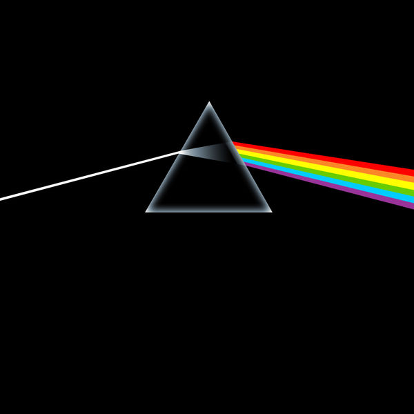

The Dark Side of the Moon is the eighth studio album by the English rock band Pink Floyd,
released on 1 March 1973 by Harvest Records. Primarily developed during live performances,
the band premiered an early version of the record several months before recording began.
The record was conceived as an album that focused on the pressures faced by the band during their arduous lifestyle,
and dealing with the apparent mental health problems suffered by former band member Syd Barrett, who departed the group in 1968.
New material was recorded in two sessions in 1972 and 1973 at Abbey Road Studios in London.